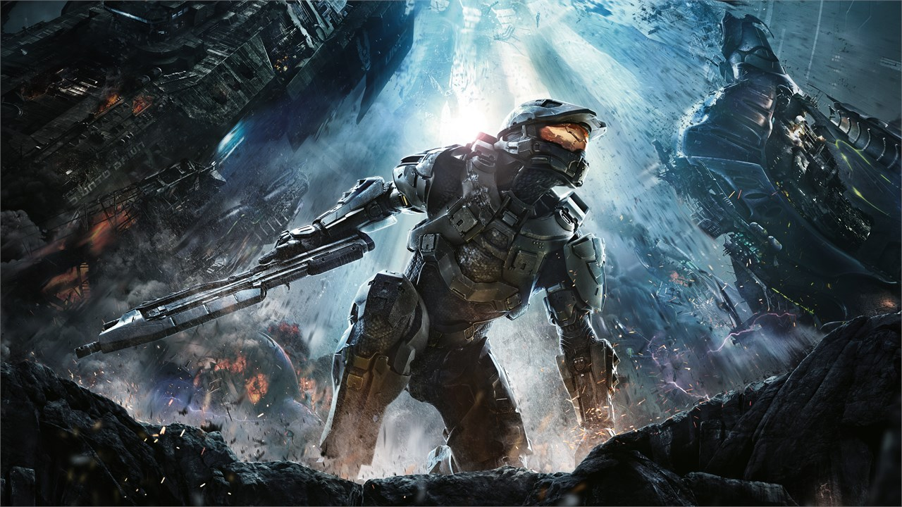
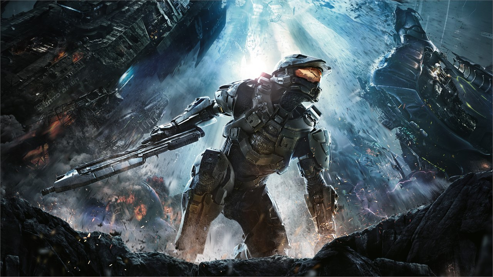
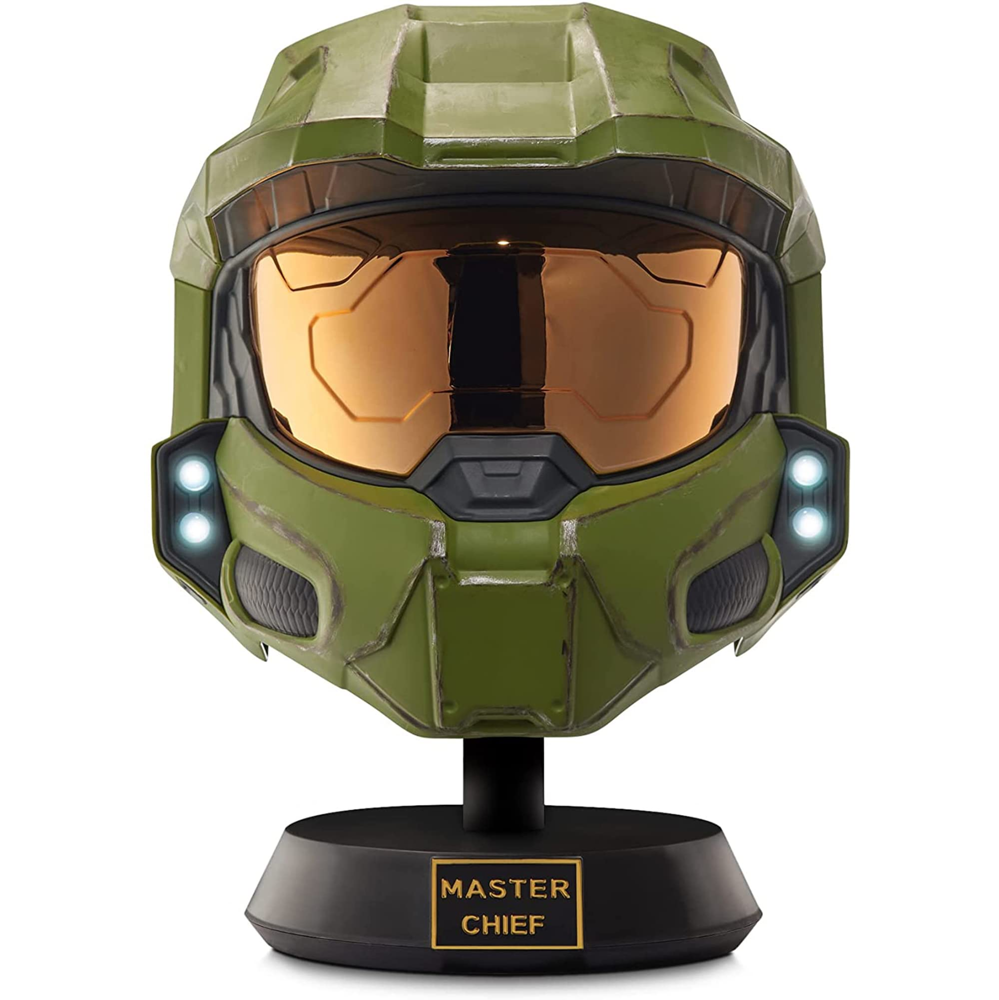

Creación del videojuego
Un post breve sobre como surgio Halo
Halo es un juego que fue creado por Bungie primeramente y actualmente pertenece a Halo y su empresa 343Industries
Esta pagina tiene el objetivo de dar a conocer un poco sobre la historia de Halo,
tanto el entorno para crearlo
como su lore dentro del juego
Un post breve sobre como surgio Halo
Halo es un juego que fue creado por Bungie primeramente y actualmente pertenece a Halo y su empresa 343Industries
Los juegos de Halo son numero entre los juegos destacados esta:

La historia principal de la mayoria de los juegos (excepto algunos como Reach) va en torno a un personaje que es el protagonista de esta saga: Master Chief
Master Chief, tambien conocido como John-117, es un soldado geneticamente modificado fruto de un programa secreto de la
UNSC llamado ORION,
encargado de crear soldados (a partir de niños huerfanos, cosa que fue un secreto en un principio)
que, a traves de mejoras genéticas y armaduras especiales,
pudieran combatir con facilidad a los insurgentes,
no obstante, pronto el fin de estos soldados daria un giro de 360 grados al encontrarse con una amenaza alienigena conocida
como el covenant